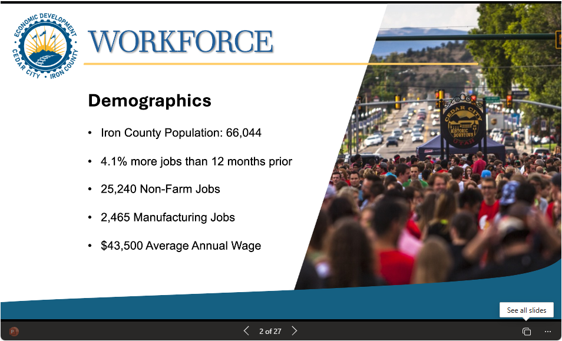

Quick Summary
This page highlights which industries added jobs, which lost jobs, and how wages compare across Iron County.
Visualizations
Compare job growth and average monthly wages by industry.
A) Industry comparison
B) Growth weighted by wage
This view shows how much each industry contributes when job change is considered alongside wage levels.
Data Table
Growth values can be positive or negative. Wages are average monthly wages.
| Job Category | Total Jobs | Growth | Average Monthly Wage | Growth × Wage |
|---|---|---|---|---|
| Totals | — |
Data Highlights
A simple read on where the labor market appears strongest in Iron County.

Simplified Comparison
A smaller way to think about the same job growth story.
One simple way to understand the data is this: when you combine all industries that lost jobs and compare them to the industries that gained jobs, Iron County gained about 4.6 jobs for every 1 job lost. Rounded into plain language, that is about 5 gained for every 1 lost.